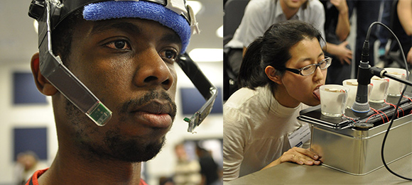
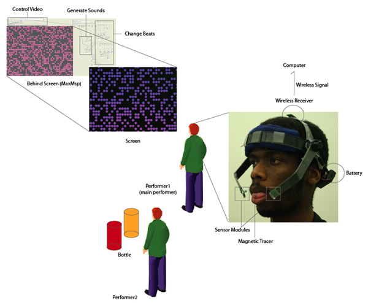

2009 Jan, Experimental Instrument, Collaboration with Ramaldo Martin
Detailed Picture

Documentation
Set Up

The Tongue Music system is an experimental instrument that employs the tongue, rather than the hand, to generate sounds, either in a single-person performance using a primary tongue controller or with an orchestra-style accompaniment utilizing modified glass bottles.
Our work is composed of primary and secondary performances. For the former, one person stands in front of a projector, which displays an abstract video image consisting of hundreds of dots. The performer controls the mouse with his tongue to simultaneously play the main melody and to manipulate the video images (the color and size of dots are changed along with the music). In the case of the latter, the other performer(s) create(s) various piano beats by placing the tongue against one of the multiple bottles.
What if we no longer had the use of our hands to play instruments or produce various forms of music? Through what alternative could we express ourselves musically? This work explores the use of the human tongue, which rivals the hand in terms of its ability to perform sophisticated manipulation tasks, to play music.
The Tongue Music system consists of three components: a bio-computer interface, an audio/video production system and four bottles for creating piano beats.
-The first component is a Tongue-Computer Interface, known as the Tongue Drive System. The headset possesses sensors that detect magnetic flux emanating from a small magnet secured on the tongue with tissue adhesive. These sensor readings are wirelessly transmitted to the computer. A signal-processing algorithm converts the readings into mouse commands that are then employed by the audio/video production system.
-The A/V system, designed in Max/MSP, uses the tongue-driven input for audio and video synthesis. In the case of the latter, the system utilizes the mouse position to non-linearly control the visual playback. By also mapping the mouse position to 128 distinct notes, the user can continuously - or occasionally - play music with the tongue.
- Two bottles are altered to contain the circuit board of a mini-electronic keyboard. The bottles also contain four magnets each attached to springs. When a performer touches the tongue magnet to a part of the bottle, it attracts the closest magnet , which touches a metal switch connected to the circuit board. This completes a circuit that causes a specific piano note to be synthesized.
Credit
Hye Yeon Nam:Experimental Instrument Concept and A/V design
Ramaldo Martin: Tongue-Computer Interface (TCI)
GT-Bionics Laboratory
GT-LCC/Digital Media